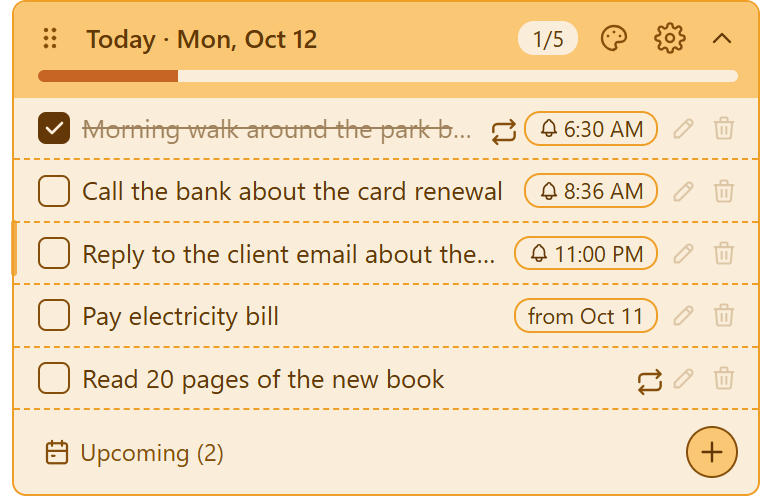
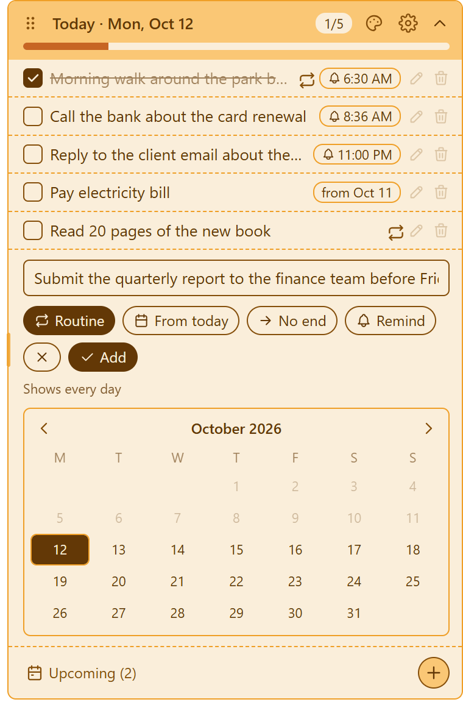
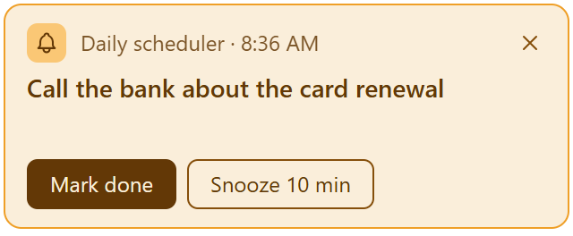

Your day, on a sticky note
Daily scheduler is a free desktop app that keeps today's tasks on a small note on your desktop. It opens when your computer starts and shows only what's planned for today.
Download for Windows, macOS or Linux
What it does
- Today only: your list shows today's tasks and your daily routines. Tasks for later dates wait under Upcoming.
- Routines: tasks that come back every day, from a start date you pick, with an optional end date.
- Deadlines: a task with a deadline shows every day until it's done, with a countdown that turns from green through yellow to red as the deadline gets closer.
- Progress bar: goes from red to green as you finish tasks.
- Roll-over: unfinished tasks move to the next day.
- Reminders: a pop-up at the time you set, with snooze. Missed reminders show when your computer wakes up.
- Stays on the desktop: the note sits behind your apps and is there when you minimise them.
- Optional Google Tasks sync: sign in with Google to see and tick your tasks on your phone.


How it uses your Google account
Signing in with Google is optional, and the app works fully without it. If you sign in, Daily scheduler creates a list called "Daily scheduler" in your Google Tasks and keeps it in sync with the app. It uses your email address only to show which account you signed in with. Your tasks go only between your computer and your own Google account. There's no Daily scheduler server, and nothing is shared or sold. Read the privacy policy for the details.
Free and open source
Daily scheduler is free under the MIT licence. The full source code is on GitHub. To report a problem or ask a question, open an issue.